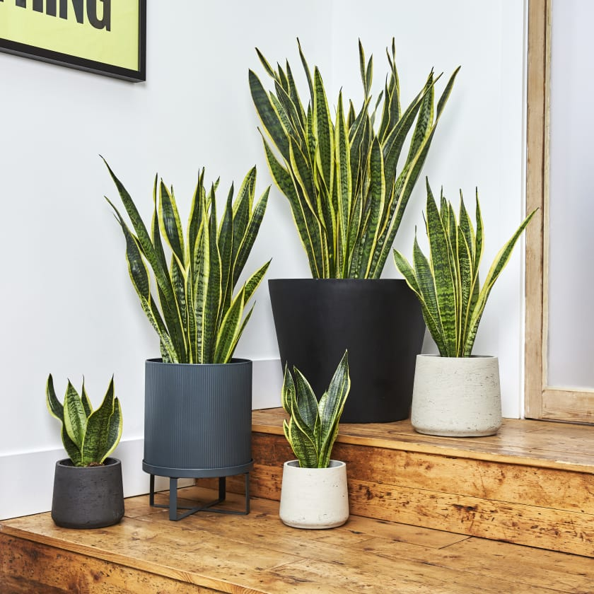

CONTENT
Кактус
Слово «кактус» походить від грец. Κακτος, яке в класичній грецькій мові використовувалося для позначення одного з видів реп'яху. Він колеться, хоча бувають кактуси, які не колять. В мене є 3 кактуси, Люда їх поливає і лише один з них колючий

Ajahuaska-Aloe
Ce aloe z albumy Ajahuaska gurtu LatexFauna
Воно добре пахне і ми його нюхаємо, після чого стає добре слухати їх пісні.
Вони круті, слухали, в AirPods-ах
звучить непогано. Аяхуяска це галюценогенний напій, який готують шамани племен Амазонки для спілкування з духами

Сансеверія Гадюка
Гугл каже, що це Сансеверія Конопля Гадюка Гадюка. Ми стирили таку з універа, вона була масіпусінька, а тепер вимахала 60 сантиметрів. На стіл вже не влазе, треба кудись переставить і пересадить
Зелене житло
Я попросив Люду написати мені тексти, я ж не контент менеджер і не дизайнер, я тільки намагаюсь щось зверстати, але вона мене не слухає. Не можу нічого придумати, але залишу тут текст, бо тоді картинка буде з великим відступом від тексту, а я хочу красиво
Великий Вазон
Насправді вона багато що зробила:
- придумала назву сайта
- заголовки в меню і тематику
- підказує як краще: з рамками solid чи dotted, зійшлись на none
- Знайшла дві картинки (Житло і Вазон)
Кімнатні рослини
Затишок в оселі- те до чого прагне кожен господар, і це не тільки картаті пледи та стильні меблі, це ще й наявність душі, а як людина лишить частинку себе, лише серез турботу та дарування любові іншій живій істоті,і тут на допомогу у створенні душевного затишку приходять наші мовчазні друзі-кімнатні рослини